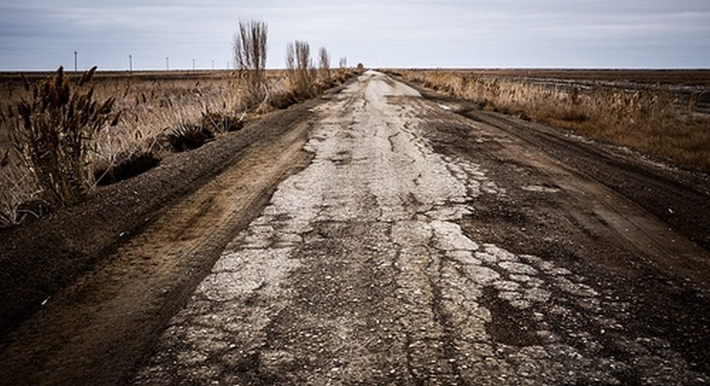
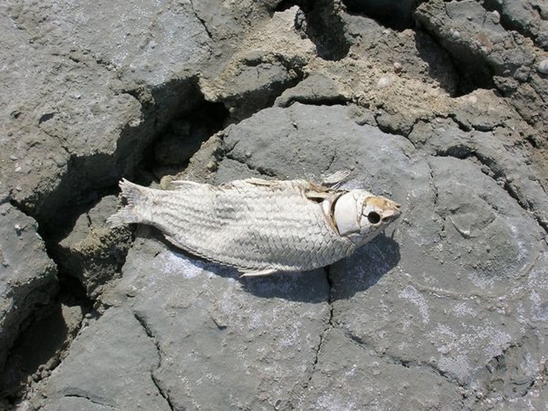
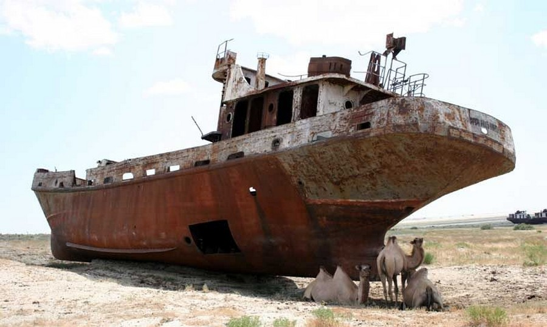

As the sea was drying up, it's salt content grew higher. The wildlife could not get used to this, and kept continiously dying off. The already dried up parts got stired up by sandstorms, which led to salt being spread across the cultivated crop. The sandstorm and the water shortage destroyed not only the fishing but also the griculture.
It became frequent for the inhabitants to get throat cancer, tuberculosis and other respiratory diseases. The protein deficiency led to anemia and a lot of infant death.
|  |
|  |
|  |